Presence before permission
Agency appears through proximity, scale, and bodily insistence. Faces and fragments interrupt the viewer before the viewer has decided what kind of image this is.
Issue 01 / Brooke Chauntel
Looking begins before language. The eye reaches for presence, danger, beauty, memory, privacy, and meaning before the mind has finished naming what it sees.
This issue follows the female image through body, rule, veil, symbol, and response. It studies sight as behavior: what asks to be seen, what is blocked, and what the viewer has been trained to notice.
The eye arrives before permission.
Chapter 01
The body enters first as a human problem. A hand, a shoulder, a mouth, an eye, or a turned face does not wait for explanation.
Agency appears through proximity, scale, and bodily insistence. Faces and fragments interrupt the viewer before the viewer has decided what kind of image this is.
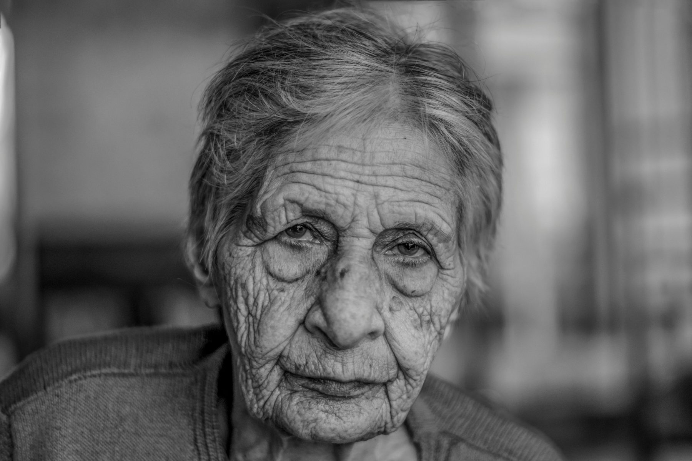
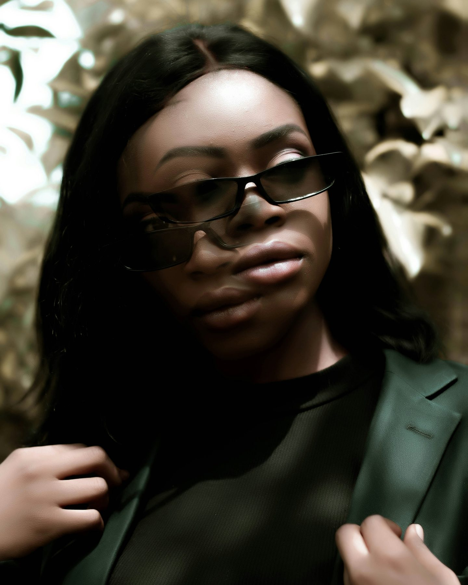
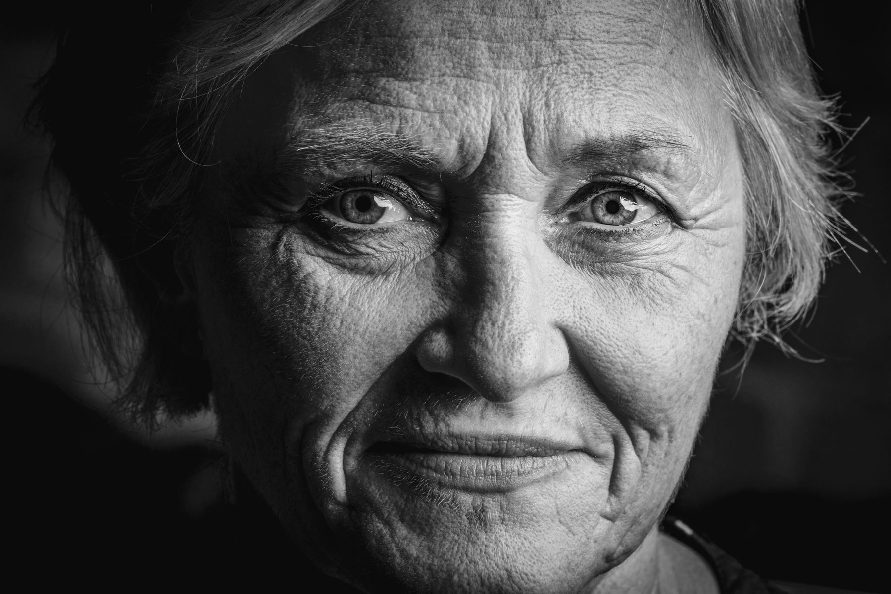
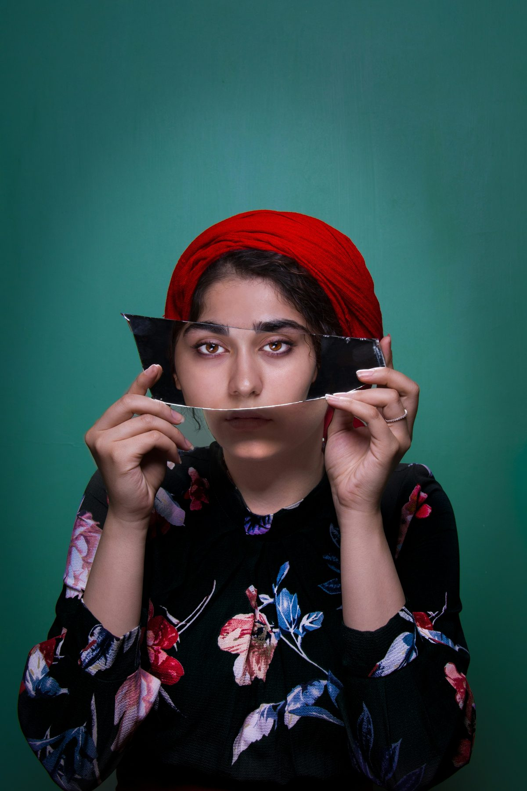
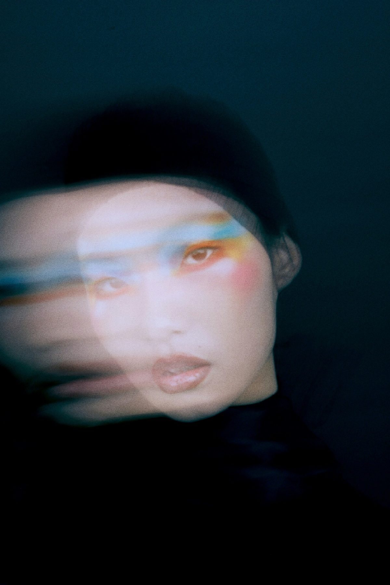
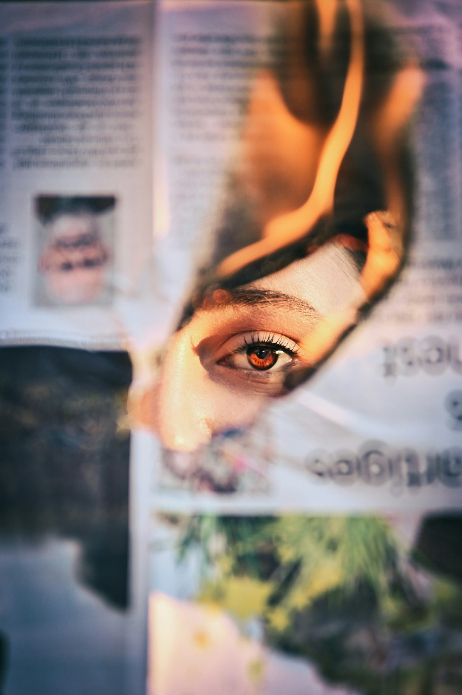
Chapter 02
Culture turns visibility into a protocol. The face may still look outward, but it looks through posture, costume, ritual, class, and inherited rules of display.
The gaze is never neutral.
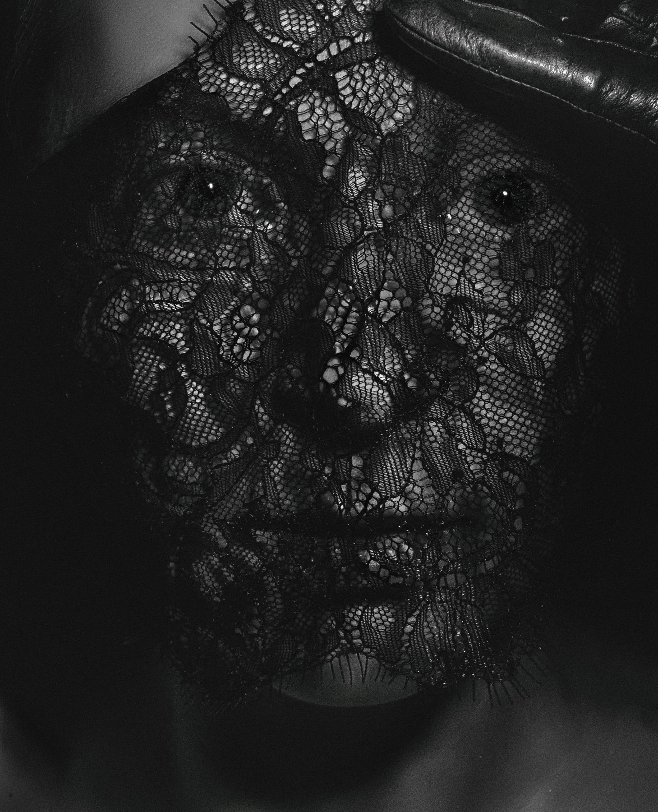
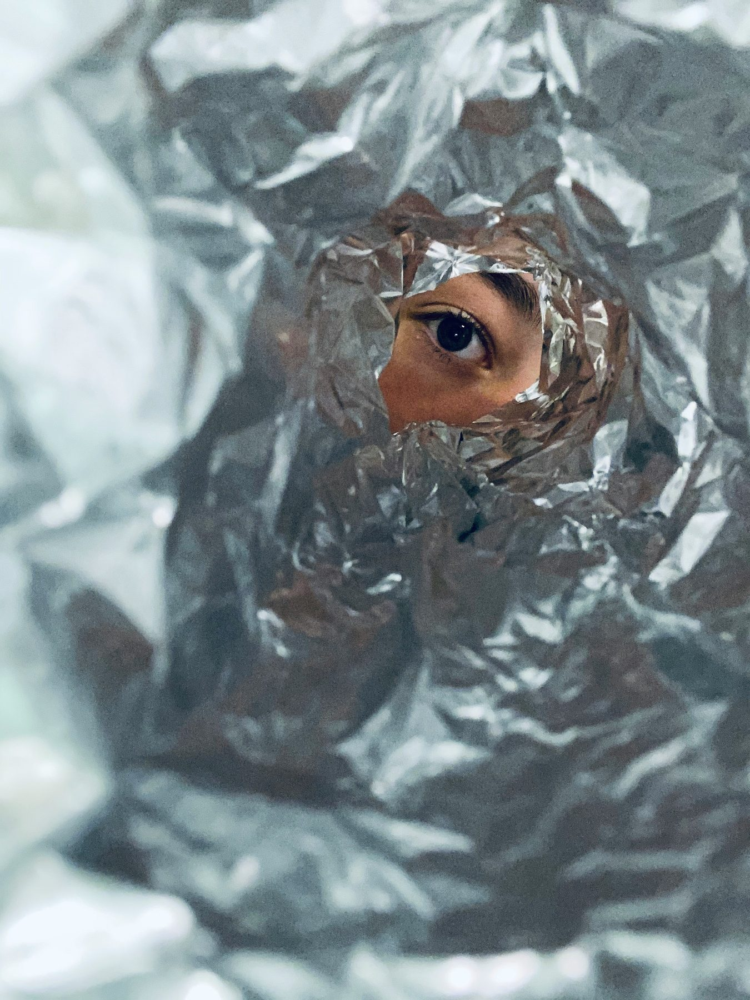
Constraint does not erase agency. It redirects it. The viewer is constrained too, taught by repetition, obstruction, pose, and symbol.
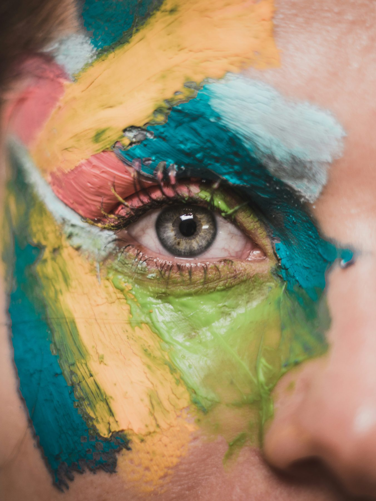
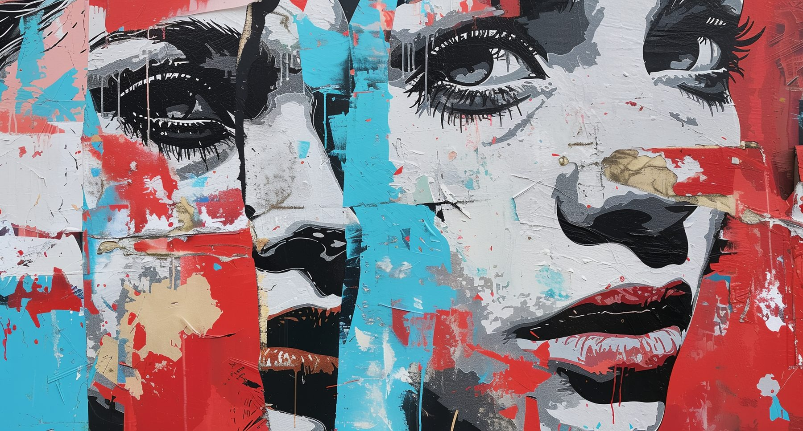
Chapter 03
The veil is an editing system, not a disappearance. Lace, shadow, fabric, blur, flowers, hair, hands, and darkness decide how slowly a person can be read.
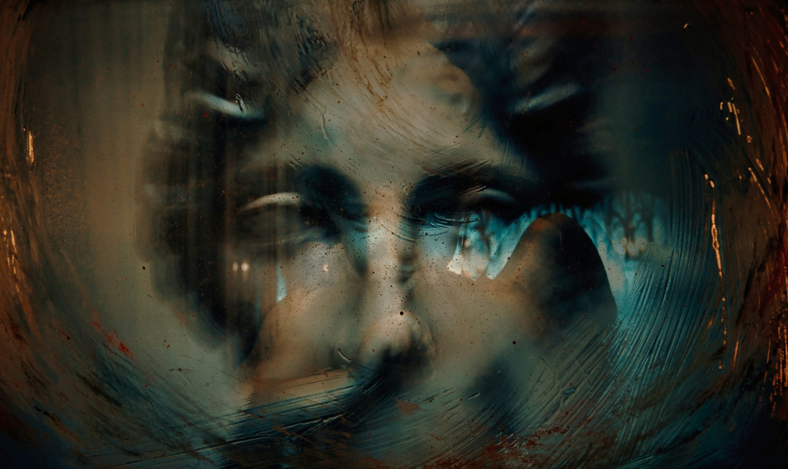
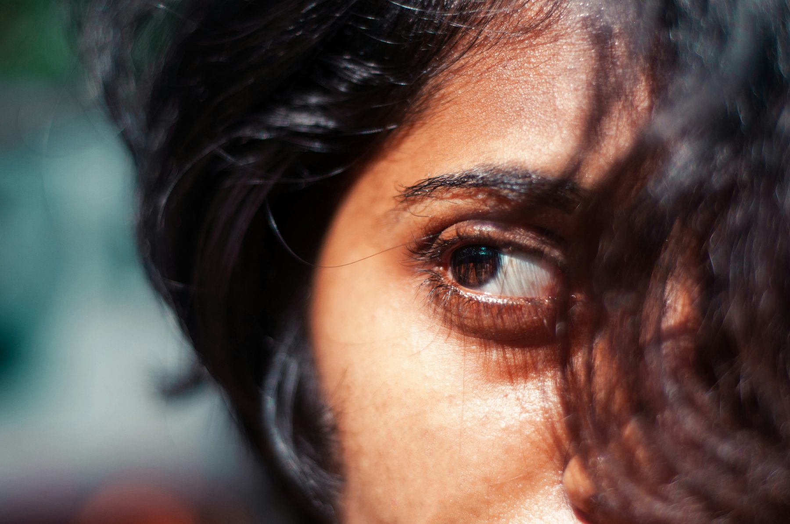
A hidden gaze makes the viewer work harder. The spread makes that effort visible.
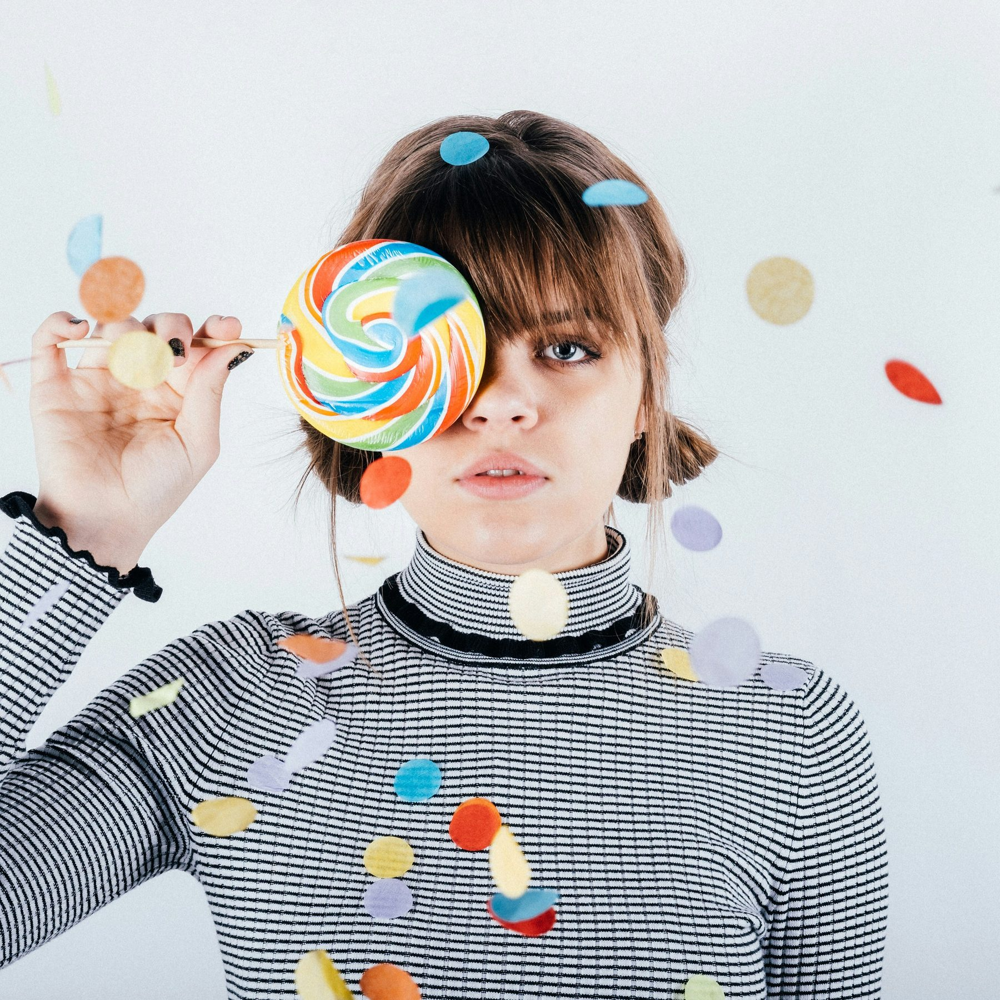
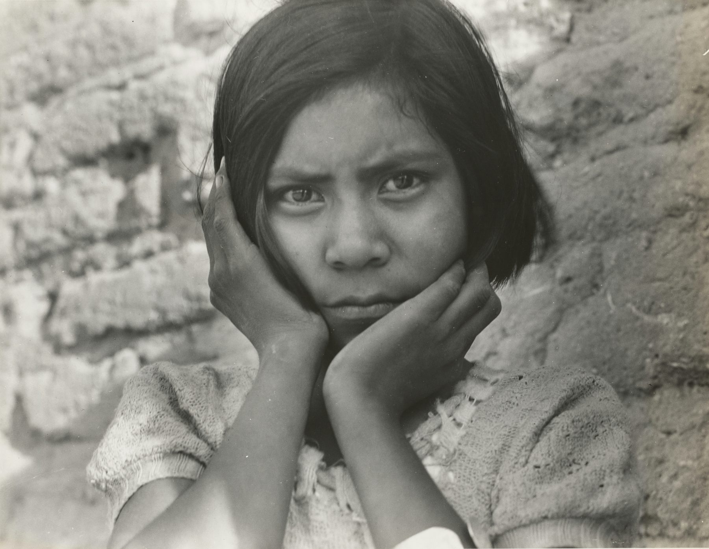
Closing Essay
Sight becomes psychologically charged when the body, the rule, and the veil remain active together. No single force wins.
Portraiture gives the issue its body. Symbolism gives it inward meaning. Surrealist image logic gives it obstruction and displacement. Together, they let the magazine study sight as perception, not decoration.
That return is the anatomy of looking.
References
Writing, sequencing, and web presentation by Brooke Chauntel. Everett Community College, 2026. Third-party image assets remain subject to their original source licenses.